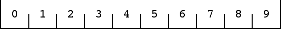
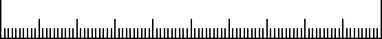

| 1. Draw a horizontal line segment of length 10 cm. Mark the endpoints
with vertical segments of length 1 cm. |
|
| 2. Divide the horizontal segment into pieces of length 1 cm.
Mark thee segments with vertical segments of length 0.5 cm. |
|
| Assign an address 0 to the leftmost tenth, 1 to the next tenth,
2 to the next tenth, ..., 9 to the right tenth. |
|  |
| Note the address of each interval is the number of tenths of all
points in that interval. |
| 3. Divide the horizontal segment into pieces of length 0.1 cm.
Mark thee segments with vertical segments of length 0.25 cm. |
|  |
| To the subdivisions of the interval with address 0 assign addresses
00, 01, ... , 09; to the subdivisions of the interval with address 1 assign
addresses 10, 11, ... , 19; and so on. |
| Note the address of each interval is the number of hundredths of all
points in that interval. |
| 4. To relate this to the more familiar notion of addresses through IFS, the
subdivision of 2. can be achieved through these functions. |
| f0(x) = x/10 + 0/10 | | f1(x) = x/10 + 1/10 |
| f2(x) = x/10 + 2/10 | | f3(x) = x/10 + 3/10 |
| f4(x) = x/10 + 4/10 | | f5(x) = x/10 + 5/10 |
| f6(x) = x/10 + 6/10 | | f7(x) = x/10 + 7/10 |
| f8(x) = x/10 + 8/10 | | f9(x) = x/10 + 9/10 |
|
| Thinking of the original interval of 1. as [0, 1], the region with address
37 is f3(f7([0,1])). |
|
|